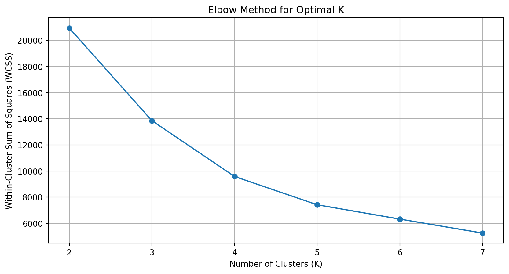
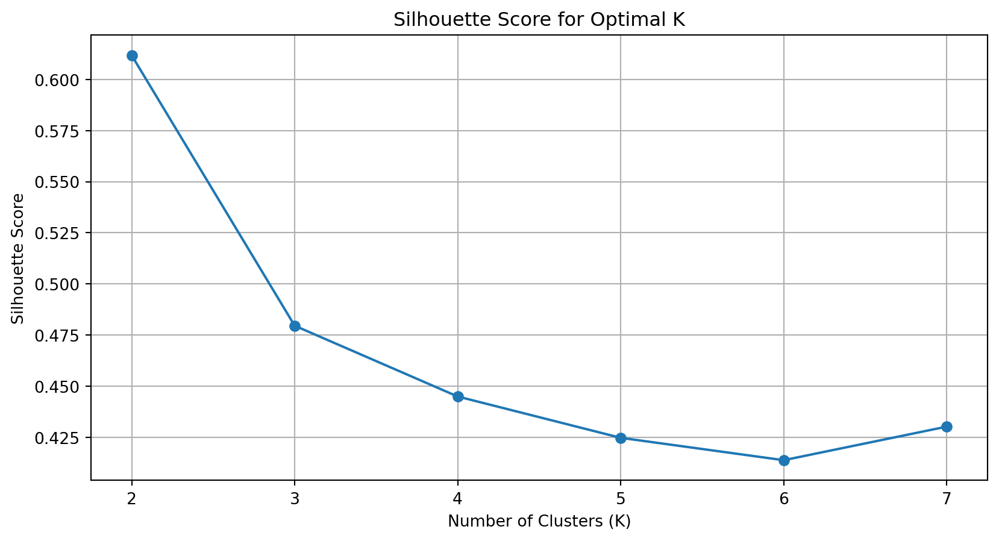
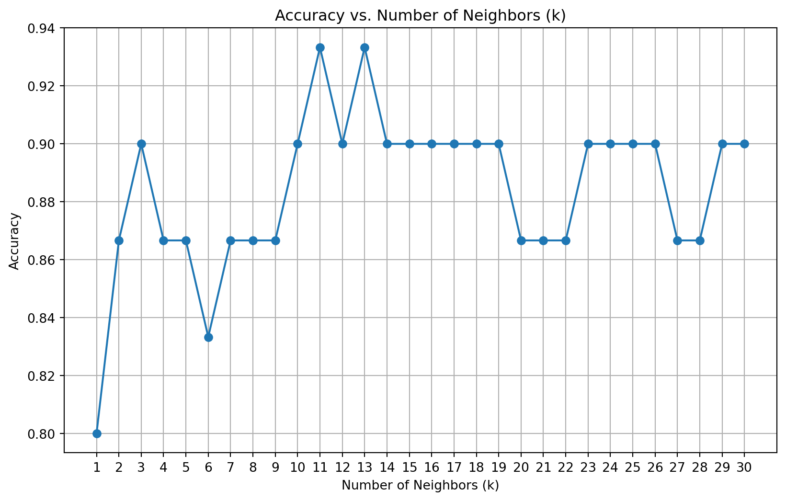

Here we try to build a k-means algorithm on our own. We test our algorithm on the Palmer Penguins dataset using the bill length and flipper length variables, and we visualize the steps the algorithm takes.
We also compare our results to the built-in sklearn.cluster.KMeans function. We can see the results are basically the same.
Now we calculate the within-cluster-sum-of-squares and silhouette scores and plot the results for various numbers of clusters (2-7).
import pandas as pdimport numpy as npimport matplotlib.pyplot as pltfrom sklearn.cluster import KMeansfrom sklearn.metrics import silhouette_score# Load Palmer Penguins data again#data_penguins = pd.read_csv("palmer_penguins.csv")#data_penguins_clean = data_penguins[['bill_length_mm', 'flipper_length_mm']].dropna()#data_array = data_penguins_clean.values# Calculate WCSS and silhouette scoreswcss = []silhouette_scores = []K_range =range(2, 8)for k in K_range: kmeans = KMeans(n_clusters=k, random_state=42, n_init=20) labels = kmeans.fit_predict(data_array) wcss.append(kmeans.inertia_) silhouette_scores.append(silhouette_score(data_array, labels))# Plot WCSS (Elbow Method)plt.figure(figsize=(10, 5))plt.plot(K_range, wcss, marker='o')plt.xlabel('Number of Clusters (K)')plt.ylabel('Within-Cluster Sum of Squares (WCSS)')plt.title('Elbow Method for Optimal K')plt.grid(True)plt.show()# Plot Silhouette Scoresplt.figure(figsize=(10, 5))plt.plot(K_range, silhouette_scores, marker='o')plt.xlabel('Number of Clusters (K)')plt.ylabel('Silhouette Score')plt.title('Silhouette Score for Optimal K')plt.grid(True)plt.show()# Display numerical resultsresults_df = pd.DataFrame({"K": list(K_range),"WCSS": wcss,"Silhouette Score": silhouette_scores})results_df


K
WCSS
Silhouette Score
0
2
20949.785311
0.611794
1
3
13858.943072
0.479518
2
4
9587.135277
0.444884
3
5
7422.456314
0.424674
4
6
6326.305141
0.413729
5
7
5256.590139
0.430152
Based on the two clustering evaluation metrics presented:
（1） Within-Cluster Sum of Squares (WCSS, Elbow Method): As the number of clusters increases, the WCSS continuously decreases, with a noticeable “elbow” appearing around K = 3, suggesting that 3 clusters are appropriate.
（2） Silhouette Score: The highest silhouette score occurs at K = 2. As the number of clusters increases further, the silhouette score continually declines, indicating that additional clusters may not meaningfully enhance data separation.
Combining these two metrics with domain knowledge and business context, choosing 3 clusters is more appropriate.
2a. K Nearest Neighbors
We first generate a dataset for later usage. The dataset has two features, x1 and x2, and a binary outcome variable y that is determined by whether x2 is above or below a wiggly boundary defined by a sin function.
We now plot the data where the horizontal axis is x1, the vertical axis is x2, and the points are colored by the value of y. We also draw the wiggly boundary here.
Now we implement KNN by hand and compare its performance with scikit-learn’s KNeighborsClassifier in Python. We can see that the performance is exactly the same.
from sklearn.neighbors import KNeighborsClassifierfrom sklearn.metrics import accuracy_scorefrom sklearn.model_selection import train_test_split# Split data into training and test setsX = np.column_stack((x1, x2))y = yX_train, X_test, y_train, y_test = train_test_split(X, y, test_size=0.3, random_state=42)# Implement KNN by handdef custom_knn(X_train, y_train, X_test, k=5): predictions = []for test_point in X_test: distances = np.linalg.norm(X_train - test_point, axis=1) k_indices = np.argsort(distances)[:k] k_labels = y_train[k_indices] pred_label = np.bincount(k_labels).argmax() predictions.append(pred_label)return np.array(predictions)# Test custom KNNy_pred_custom = custom_knn(X_train, y_train, X_test, k=5)accuracy_custom = accuracy_score(y_test, y_pred_custom)# sklearn KNeighborsClassifierknn = KNeighborsClassifier(n_neighbors=5)knn.fit(X_train, y_train)y_pred_sklearn = knn.predict(X_test)accuracy_sklearn = accuracy_score(y_test, y_pred_sklearn)accuracy_custom, accuracy_sklearn
(0.8666666666666667, 0.8666666666666667)
Finally, we run our function for k=1,…,k=30, each time noting the percentage of correctly-classified points from the test dataset.
accuracies = []# Loop through values of k from 1 to 30k_values =range(1, 31)for k in k_values: y_pred_k = custom_knn(X_train, y_train, X_test, k=k) acc = accuracy_score(y_test, y_pred_k) accuracies.append(acc)# Plotting the resultsplt.figure(figsize=(10, 6))plt.plot(k_values, accuracies, marker='o')plt.xlabel('Number of Neighbors (k)')plt.ylabel('Accuracy')plt.title('Accuracy vs. Number of Neighbors (k)')plt.xticks(k_values)plt.grid(True)plt.show()# Find optimal k (maximum accuracy)optimal_k = k_values[np.argmax(accuracies)]optimal_accuracy =max(accuracies)optimal_k, optimal_accuracy

When we plot the results, we can notice that the accuracy generally increases with K when K is smaller than 12, and it becomes relatively stable after that. According to the plot, the optimal value of k is 11 or 13.